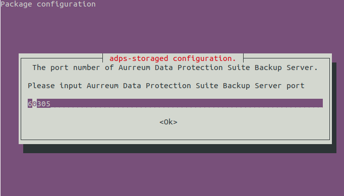

Installation Guide
Contents
Installation Guide#
About ADPS#
Aurreum Data Protection Suite (ADPS) is a software product that can be used for the backup, restore, and disaster recovery of enterprise operating systems, databases, files, and virtual machines. ADPS provides a Web interface for users to monitor and manage the backup/restore jobs and the backup systems of large enterprises or governments distributed in different places. With the capabilities of off-site disaster recovery and data replication, it offers an efficient and cost-effective solution for high database reliability and availability.
ADPS Components#
ADPS components include Backup Server, Storage Server, and Agent.
Backup Server: It is responsible for managing the connections of the Backup Agent and Storage Server. It can monitor and manage the business information of each agent resource, including backups and restores, and the information of storage servers.
Storage Server: It is responsible for receiving and storing data as well as processing the recycling mechanisms of backup data. The Backup Server and Storage Server components can be installed on the same or different devices. One backup server can manage multiple storage servers to achieve storage scalability.
Agent: It is responsible for responding to the commands of the backup server console as well as performing the backup and restore jobs. The Agent is installed on the server where users store business data. It will be managed by the backup server after their connection.
Installation Process#
This document introduces the process of installing a new ADPS system in the environment where the backup server and storage server are installed on the same device (i.e., an engineered data protection appliance). Please follow the steps below.
Step 1. Prepare the environment
Step 2. Update the kernel
Step 3. Install MariaDB
Step 4. Install ADPS
Step 5. Connect the Catalog database
Step 6. Install online manual
Step 7. Install optional modules
Step 8. Install auxiliary tools
Step 9. Open access ports
Step 10. Check the service state
Server Requirements#
The following are the hardware requirements for the ADPS backup/storage server. You can refer to the server configuration of the Aurreum Data Protection Appliance (ADPA). If you use an outdated server, problems such as incompatibility may occur.
Architecture
A physical server or virtual machine with a 64-bit x86 architecture is required.
Memory
Memory# Item
Standard Configuration
Minimum Configuration
Instruction
Software installation
More than 32 G
More than 16 G
Less than 16 G may result in unacceptable performance.
CDM or de-duplication service
At least 1.5‰ of the data disk
More than 16 G
For example, if the data disk space is 64 T, the storage server memory should be at least 96 G.
Storage
The storage of the backup/storage server is classified into: system disk and data disk.
Storage# Storage
Recommendation
System disk
Use the Solid-State Drive (SSD) as the system disk, at least two SSDs of 120 G or above, and create a RAID1.
Data disk
Equip multiple mechanical Hard Disk Drives (HDDs) for the data disk, which depends on the hardware server configuration and business volume.
Network
Use at least two network interface cards (GE/10GE) for isolating networks for different usages such as management and storage. If there are scenarios of LAN-Free function and database synthetic backups, an iSCSI/FC HBA card is also required. See the Appendix for the compatible models of the supported HBA card.
For hardware servers other than ADPA, you need to handle the compatibility issues of hardware devices and system software by yourselves, including network interface card and HBA card.
Operating system
The following operating systems are supported for the backup/storage server:
Operating system# Operating System
CPU Architecture
Operating System Bits
Ubuntu 18.04
x86
64
CentOS 7.6
x86
64
File system
(1) System disk
Use LVM to create VG (systemvg) on the system disk and then create LV on the systemvg. The recommended system partitions are:
System disk # Partition
Mount Point
Partition Size
File System
boot
/boot512 MiB
ext2
rootlv
/32 GiB and above
xfs
swaplv
swap16 GiB and above
swap
(2) Data disk
An XFS or ZFS file system is required to be created on the data disk. To achieve LAN-Free function and database synthetic backups, a ZFS file system should be created. For other scenarios, an XFS file system should be created.
XFS file system
Use LVM to create VG (infokistvg) on the data disk and create the following infokistlv on infokistvg.
XFS file system# Partition
Mount Point
Capacity
File System Type
infokistlv
/infokistAll data disk space
XFS
ZFS file system
If a ZFS file system is created on the data disk, you should configure JBOD mode (pass-through mode) on the RAID controller. Use the zpool create command to create an infokist pool on the data disk and then mount the pool to the /infokist directory.
ZFS file system# ZFS pool
Mount Point
Capacity
File System Type
infokist
/infokistAll data disk space
ZFS
First, check the device ID of each hard disk. For example, /dev/disk/by-id/wwn-0x5000cca271c7dcd2 is the device ID of /dev/sda.
ls -l /dev/disk/by-id/
Create ZPOOL. Take 24 HDDs for example.
Check the HDD physical sector size sudo blockdev --getpbsz /dev/disk/by-id/wwn-0x5000cca271c7dcd2 4096
If the physical sector size of the disk is 4 KiB (i.e. “Advanced Format”: https://en.wikipedia.org/wiki/Advanced_Format), then
sudo zpool create -f -m /infokist -o ashift=12 infokist \ raidz2 \ /dev/disk/by-id/wwn-0x5000cca271c7dcd2 /dev/disk/by-id/wwn-0x5000cca271c81fa3 /dev/disk/by-id/wwn-0x5000cca271c8259e \ /dev/disk/by-id/wwn-0x5000cca271c8273b /dev/disk/by-id/wwn-0x5000cca271c82b67 /dev/disk/by-id/wwn-0x5000cca271c82d9e \ /dev/disk/by-id/wwn-0x5000cca271c83674 /dev/disk/by-id/wwn-0x5000cca271c836e4 /dev/disk/by-id/wwn-0x5000cca271c840eb \ /dev/disk/by-id/wwn-0x5000cca271c846dd /dev/disk/by-id/wwn-0x5000cca271c848a6 /dev/disk/by-id/wwn-0x5000cca271c8509f \ raidz2 \ /dev/disk/by-id/wwn-0x5000cca271c76773 /dev/disk/by-id/wwn-0x5000cca271c79f59 /dev/disk/by-id/wwn-0x5000cca271c8080a \ /dev/disk/by-id/wwn-0x5000cca271c82df7 /dev/disk/by-id/wwn-0x5000cca271c8371d /dev/disk/by-id/wwn-0x5000cca271c837e9 \ /dev/disk/by-id/wwn-0x5000cca271c837f7 /dev/disk/by-id/wwn-0x5000cca271c84cf8 /dev/disk/by-id/wwn-0x5000cca271c84cfd \ /dev/disk/by-id/wwn-0x5000cca271c84cff /dev/disk/by-id/wwn-0x5000cca271c8508f /dev/disk/by-id/wwn-0x5000cca271c85193
If the physical sector size of the disk is 512 B, then
sudo zpool create -f -m /infokist infokist \ raidz2 \ /dev/disk/by-id/wwn-0x5000cca271c7dcd2 /dev/disk/by-id/wwn-0x5000cca271c81fa3 /dev/disk/by-id/wwn-0x5000cca271c8259e \ /dev/disk/by-id/wwn-0x5000cca271c8273b /dev/disk/by-id/wwn-0x5000cca271c82b67 /dev/disk/by-id/wwn-0x5000cca271c82d9e \ /dev/disk/by-id/wwn-0x5000cca271c83674 /dev/disk/by-id/wwn-0x5000cca271c836e4 /dev/disk/by-id/wwn-0x5000cca271c840eb \ /dev/disk/by-id/wwn-0x5000cca271c846dd /dev/disk/by-id/wwn-0x5000cca271c848a6 /dev/disk/by-id/wwn-0x5000cca271c8509f \ raidz2 \ /dev/disk/by-id/wwn-0x5000cca271c76773 /dev/disk/by-id/wwn-0x5000cca271c79f59 /dev/disk/by-id/wwn-0x5000cca271c8080a \ /dev/disk/by-id/wwn-0x5000cca271c82df7 /dev/disk/by-id/wwn-0x5000cca271c8371d /dev/disk/by-id/wwn-0x5000cca271c837e9 \ /dev/disk/by-id/wwn-0x5000cca271c837f7 /dev/disk/by-id/wwn-0x5000cca271c84cf8 /dev/disk/by-id/wwn-0x5000cca271c84cfd \ /dev/disk/by-id/wwn-0x5000cca271c84cff /dev/disk/by-id/wwn-0x5000cca271c8508f /dev/disk/by-id/wwn-0x5000cca271c85193
After the creation, ZPOOL will be automatically mounted to the /infokist directory. You can use the df -h command to check the results.
Set the time zone
Set the time zone of the operating system as that of your current location. The recommended modification command is:
sudo timedatectl set-timezone <your_time_zone>
Prepare Software Packages#
You can contact our technical support to get the required ADPS packages. The versions of the products installed on all ADPS components must be the same. Mixed version installation may result in abnormal Web access and functions. The following table shows the packages and their functions:
Software Package |
Function |
|---|---|
adps-common-version-architecture.suffix |
ADPS base package. It should be installed on all components. |
adps-backupd-version-architecture.suffix |
It provides ADPS backup server service. |
adps-storaged-version-architecture.suffix |
It provides ADPS storage server service. |
adps-nginx-version-architecture.suffix |
It provides ADPS Web management service. |
adps-infokist-version-architecture.suffix |
Feature pack that moves the ADPS file directory to /infokist. |
adps-storaged-lanfree-version-architecture.suffix |
ADPS LAN-Free and database synthesis feature pack. |
adps-controller-version-architecture.suffix |
Feature pack that ADPS manages tape libraries. |
adps-nfsd-version-architecture.suffix |
Feature pack that ADPS mounts files. |
system-MariaDB-version.tar.gz |
ADPS database software package. |
kernel_version-zfs_version-ubuntu1804_architecture.tar.gz |
Kernel and ZFS tool package for Ubuntu 18.04. |
kernel_version-zfs_version-centos76_architecture.tar.gz |
Kernel and ZFS tool package for CentOS 7.6. |
Update the Kernel#
If you create a ZFS file system on the data disk of the operating system, you must update the kernel to the internal source version (not the public source version) before installing the ADPS software. Otherwise, it will affect the normal use of LAN-Free and database synthesis functions. The operation is as follows:
Ubuntu
(1) Execute the following commands with root privileges:
sudo tar -zvxf 5.4.0-115_zfs0.8.6_ubuntu1804_amd64.tar.gz cd 5.4.0-115_zfs0.8.6_ubuntu1804_amd64 sudo dpkg -i kernel/*
(2) After updating the kernel, you must restart the server.
CentOS
(1) Execute the following commands with root privileges:
tar -zvxf 5.4.96-200.el7_zfs0.8.6_centos76_x86_64.tar.gz rpm -Uvh kernel/*(2) After updating the kernel, you must restart the server.
The kernel has hardware adaptation compatibility issues. Therefore, the hardware server is better in the same version as the ADPA. Otherwise, updating the kernel may lead to compatibility problems, like the server cannot be started or the operating system is damaged.
Install MariaDB Database#
Installation method
Ubuntu
sudo tar -zvxf Ubuntu1804_amd64_MariaDB10.6.tar.gz cd Ubuntu1804_amd64_MariaDB10.6 sudo sh install_MariaDB10.6.shCentOS
sudo tar -zvxf Centos7_x86-64_MariaDB10.6.tar.gz cd Centos7_x86-64_MariaDB10.6 sudo sh install_MariaDB10.6.shSet the root password
sudo systemctl start mariadb sudo mysqladmin -u root password 'xxxxxx' #(xxxxxx is the password that you set for the root user)
Modify the configuration file
Add sql_mode, remote access, and other settings on the MariaDB configuration file. Modify the /etc/mysql/mariadb.conf.d/50-server.cnf configuration file on Ubuntu and the /etc/my.cnf.d/server.cnf configuration file on CentOS.
(1) Add sql_mode
[mysqld] sql_mode='ONLY_FULL_GROUP_BY'
(2) Enable remote access. Set the bind address to 0.0.0.0
[mysqld] bind-address = 0.0.0.0
(3) Use root to log in to MariaDB and grant remote access privileges to root.
mysql -u root -p MariaDB [(none)]> GRANT ALL PRIVILEGES ON *.* TO 'root'@'%' IDENTIFIED BY 'xxxxxx'; #(xxxxxx is the password that you set for the root user) MariaDB [(none)]> FLUSH PRIVILEGES;
(4) Restart MariaDB
sudo systemctl restart mariadb
Set MariaDB to start on boot
sudo systemctl enable mariadb
Install ADPS Software#
Ubuntu#
In the directory where the installation package is located, execute the following commands in sequence with root privileges:
sudo dpkg -i adps-common_version_amd64.deb adps-backupd_version_amd64.deb adps-storaged_version_amd64.deb adps-nginx_version_amd64.deb adps-infokist_version_amd64.deb|| sudo apt-get -y -f install
Configure adps-storaged and set the IP address of the backup server, e.g., 192.168.88.239

Set the port of the backup server. The default port is 50305, which means that the data is transferred without encryption. You can encrypt the data by modifying the port to 60305.

If you enter 50305 in the previous step, choose “No” to disable the SSL protocol. If you enter 60305, choose “Yes” to enable the SSL protocol.

Wait for the installation to complete. After the installation, symbolic links will be created between the ADPS-related directories and the /infokist under the data disk.
Install the adps-infokist package after the installation of the adps-storaged package. Otherwise the /infokist directory space may not be available.
CentOS#
In the directory where the installation package is located, execute the following commands in sequence with root privileges:
rpm -i adps-common_version_x86_64.rpm adps-backupd_version_x86_64.rpm adps-storaged_version_x86_64.rpm adps-nginx_version_x86_64.rpm rpm -i adps-infokist_version_x86_64.rpm
Wait for the installation to complete. After the installation, symbolic links will be created between the ADPS-related directories and the /infokist under the data disk.
After the installation, configure adps-storaged:
/etc/init.d/adps-storaged config Please input Aurreum Data Protection Suite Backup Server host[]: ##Enter the IP address of the backup server here, e.g., 192.168.88.239 Please input Aurreum Data Protection Suite Backup Server port[]: ##Enter the port of the backup server here. The default port of the system: 60305 Does Aurreum Data Protection Suite Backup Server enable SSL protocol?[N]: ##Enter Yes here Saving adps-storaged config[OK]: ##Press "Enter" to save the configuration modification Do you want to restart adps-storaged[Y]: ##Enter Y here to restart the service
Connect Catalog Database#
The ADPS catalog needs to be connected to the MariaDB database.
sudo /etc/init.d/adps-backupd config mysql
Please input mysql host[]: 127.0.0.1
Please input mysql port[3306]:
Please input mysql user[root]:
Please input mysql password:
Loaded /opt/aurreum/adps/lib/libmysqlclient.so.18 with flags 0x00000101(RTLD_LAZY | RTLD_GLOBAL)
Test MySQL connectivity OK!
Select Y when you see the following prompt;
Do you want to restart backupd? [Y]:y
[ ok ] Restarting adps-backupd (via systemctl): adps-backupd.service.
Install Online Manual#
This step aims to enable the ADPS Web console to display the online manual. Execute the manual run script (manual_run/manual-*.run) with root privileges and enter it according to the prompt.
chmod +x manual-version.run
./manual-version.run
Install Optional Modules#
Install LAN-Free Module#
If you create a ZFS file system on the data disk of the operating system, then install the adps-storaged-lanfree software package on the storage server to run LAN-Free backups and database synthetic backups through iSCSI/FC Target. The installation commands are:
Ubuntu#
Install the lio-utils and zfsutils-linux dependent packages
sudo tar -zvxf 5.4.0-115_zfs0.8.6_ubuntu1804_amd64.tar.gz cd 5.4.0-115_zfs0.8.6_ubuntu1804_amd64 sudo dpkg -i lio-utils/* #For there may be installation package dependencies, execute twice sudo dpkg -i zfsutils-linux/*
Install the adps-storaged-lanfree software package
sudo dpkg -i adps-storaged-lanfree_version_amd64.deb
CentOS#
Install the lio-utils and zfsutils-linux dependent packages
tar -zvxf 5.4.0-115_zfs0.8.6_ubuntu1804_amd64.tar.gz rpm -ivh lio-zfs-utils/lio-utils-3.1-11.noarch.rpm rpm -ivh lio-zfs-utils/zfs-utils/* #For there may be installation package dependencies, execute twice
Install the adps-storaged-lanfree software package
rpm -ivh adps-storaged-lanfree_version_amd64.deb
Install Tape Library Controller Module#
To back up the data to the tape library, you need to install the adps-controller package on the server and make it the tape library controller. The tape library controller must be connected to the tape library over the IP-SAN or FC-SAC network. And the adps-controller handles all requests from the agent to the tape library. The installation commands are:
Ubuntu#
sudo dpkg -i adps-controller_version_amd64.deb
CentOS#
rpm -ivh adps-controller_version_x86_64.rpm
Install Instant File Recovery Module#
To achieve instant file recovery, you need to install the adps-nfsd package on the storage server. Then the file backup sets of the storage pool can be mounted on the agent. The installation commands are:
Ubuntu#
sudo dpkg -i adps-nfsd_version_amd64.deb
CentOS#
rpm -ivh adps-nfs_version_x86_64.rpm
Install Auxiliary Tools#
We recommend installing auxiliary tools such as lzop, zip, sqlite3, and rpm gnupg to facilitate subsequent system operation and maintenance.
Open Access Ports#
For the safe running of the system, open the firewall and set the access ports according to the following list.
Port |
Function |
Protocol |
Encrypted |
|---|---|---|---|
80 |
Nginx server HTTP |
TCP (HTTP) |
No |
443 |
Nginx server HTTPS |
TCP (HTTPS) |
Yes |
22 |
SSH service |
TCP |
No |
3306 |
MySQL service |
TCP |
No |
Random port (From 32768 to 65535) |
rpc.mountd (NFS service dependency) |
TCP |
No |
50305 |
Data transfer |
TCP (HTTP) |
No |
60305 |
Data encryption |
TCP (HTTPS) |
Yes |
3260 |
iSCSI |
TCP |
No |
50306 |
Data transfer |
TCP |
No |
60306 |
Data encryption |
TCP |
Yes |
50308 |
Loading and unloading tapes |
TCP |
No |
60308 |
Loading and unloading tapes |
TCP |
Yes |
50309 |
Interprocess communication among agents |
TCP |
No |
60309 |
Interprocess communication among agents |
TCP |
Yes |
10000 |
NDMP backup and restore |
TCP |
NDMP |
Check Service State#
After the installation, check whether the following ADPS services are running normally:
adps-backupd
adps-storaged
adps-nginx
adps-controller
mariadb
For example, you can check the adps-backupd service according to the following commands. The active state means that the service is running normally. The query commands for other services are the same.
/etc/init.d/adps-backupd status
● adps-backupd.service - adps backup server daemon
Loaded: loaded (/lib/systemd/system/adps-backupd.service; enabled; vendor preset: enabled)
Active: active (running) since Tue 2022-05-17 13:54:37 CST; 2 days ago
Main PID: 6064 (adps-backupd)
Tasks: 11 (limit: 1111)
CGroup: /system.slice/adps-backupd.service
└─6064 /opt/aurreum/adps/bin/adps-backupd --reactor=dev_poll -f /etc/opt/aurreum/adps/backupd/svc.conf.d
May 17 13:54:37 ubuntu1804 systemd[1]: Started adps backup server daemon.
May 17 13:54:37 ubuntu1804 adps-backupd[6064]: Created 'dev_poll' reactor
Web Interface#
After the installation, enter the IP or domain name on the browser. If you can access the ADPS Web console, the installation is successful.
You must import a product license to use the Web console. Download the “Request License” file and send it to Aurreum technical support. We will send you a file with a license certificate after approval. For details, please refer to the Administrator’s Guide.
Appendix#
Uninstall Software#
Before uninstalling the software, please confirm that you need to uninstall it. Relevant data cannot be retrieved after uninstallation.
Ubuntu#
Uninstall a module. For example, to uninstall the controller module, execute the following command with root privileges:
sudo apt-get purge adps-controller
To uninstall all ADPS software, execute the following command with root privileges:
sudo apt-get purge adps-common
Note: This command will thoroughly remove the packages and configuration files.
After the above operation, check if there is any ADPS service.
sudo dpkg -l|grep adps
CentOS#
Uninstall a module. For example, to uninstall the controller module, execute the following command with root privileges:
rpm -e adps-controller
To uninstall all ADPS software, execute the following command with root privileges:-
rpm -e `rpm -qa | grep adps`
After the above operation, check if there is any ADPS service.
rpm -qa|grep adps
Reconfigure storaged#
You can execute the following commands to reconfigure adps-storaged when the server address is changed or you have inputted the wrong backup server address, port, and protocol.
/etc/init.d/adps-storaged config
Please input Aurreum Data Protection Suite Backup Server host[192.168.20.115]: 192.168.87.115
Please input Aurreum Data Protection Suite Backup Server port[50305]:
Does Aurreum Data Protection Suite Backup Server enable SSL protocol? [N]:
Saving adps-storaged config *
Do you want to restart adps-storaged? [Y]:
[....] Restarting adps-storaged (via systemctl): adps-storaged.service
. ok
Supported FC HBA List#
QLogic
Model |
Port |
Supported Speed (GBit/s) |
|---|---|---|
QLE2560 |
1 |
2, 4, 8 |
QLE2562 |
2 |
2, 4, 8 |
QLE2670 |
1 |
4, 8, 16 |
QLE2672 |
2 |
4, 8, 16 |
QLE2690 |
1 |
8, 16, 32 |
QLE2692 |
2 |
8, 16, 32 |